3D animation for Air Bank's new payment cards — five designs inspired by world currency symbols, each shown as a real object in light and motion.
I make things look better than real.
CGI artist and visual director.
Animation set for Fabric Labs built on the mechanics of a zipper — interlocking motion carrying a crypto brand's coins through loading states and transitions.
Motion set for Fabric Labs, a crypto and fintech brand — 3D animation made for product and web, in dark and light versions.
Cell Project for Filorga with Ocho Studio — translucent cells in blue, gold and silver, made for the brand's posts on the actives at the heart of its formulas.
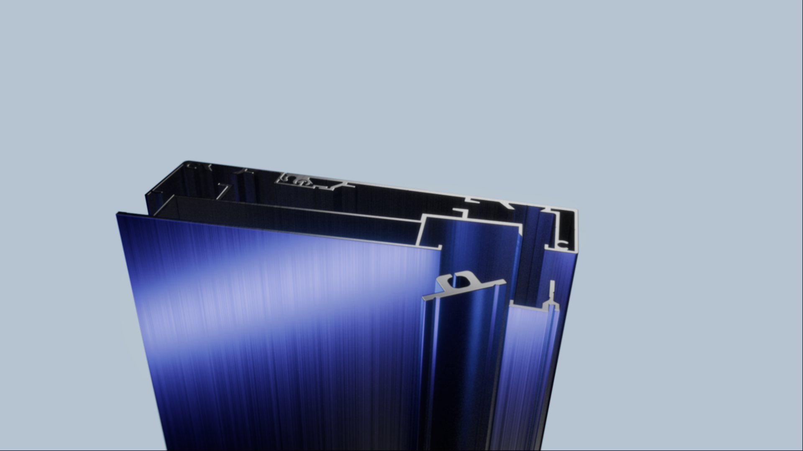
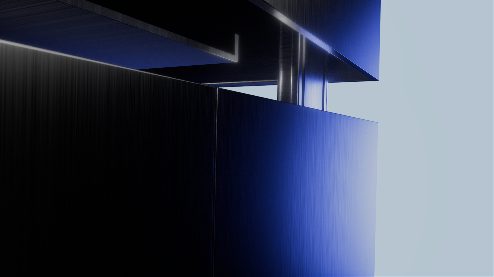
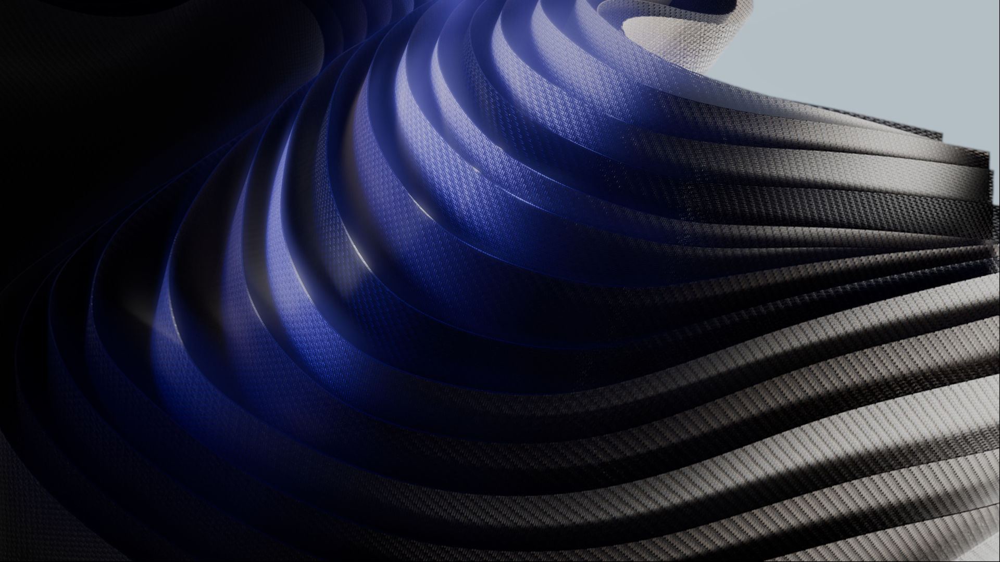
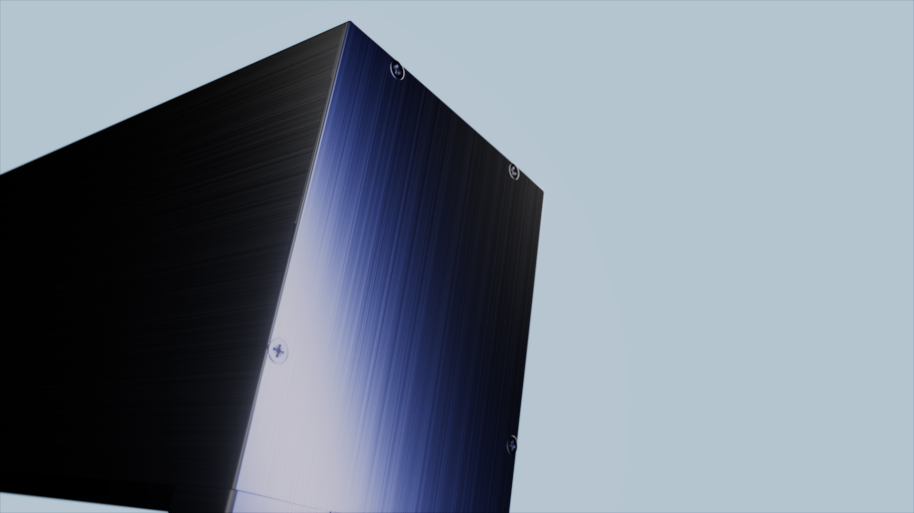
Product CGI for NEVA — exterior zipscreen blinds rendered in architectural context, where the quality of the fabric and the precision of the mechanism become the image.
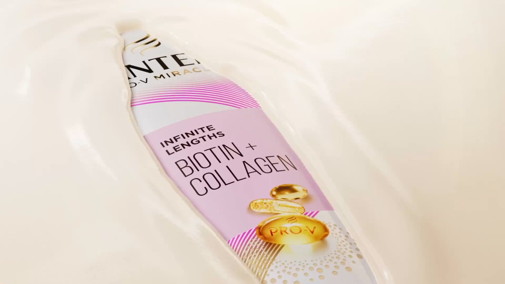
CGI campaign for Pantene Pro-V Miracle with Ars Thanea — hero shots built on fluid motion and surfaces that feel like they're still moving.

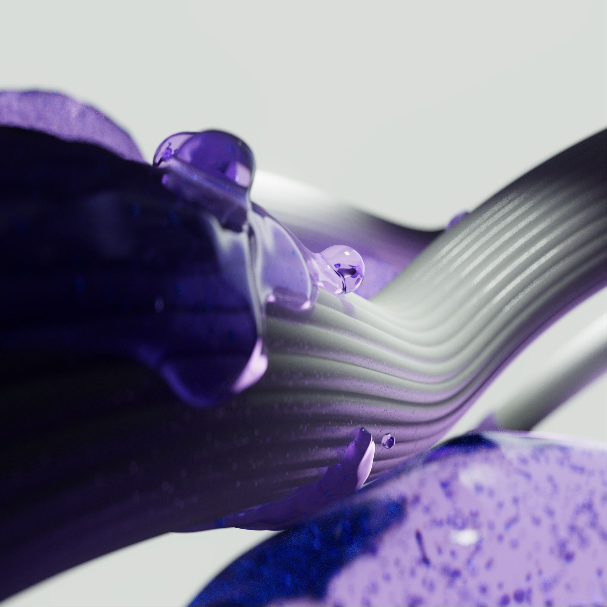
R&D styleframes for L'Oréal with Zünc Studio — gloss, a liquid meniscus and the catch light on a cap, studied before any brief.


Automotive CGI for Dodge, made at Punctum Images — a Charger SRT shaped by dramatic light and deep metallic surfaces.


Automotive CGI for Škoda, made at Punctum Images — the Kodiaq Sportline placed in an environment built from scratch, from scanned and constructed terrain.


Automotive CGI for Škoda, made at Punctum Images — the Octavia Sportline in a velodrome built entirely in 3D, then aged until it felt lived in.
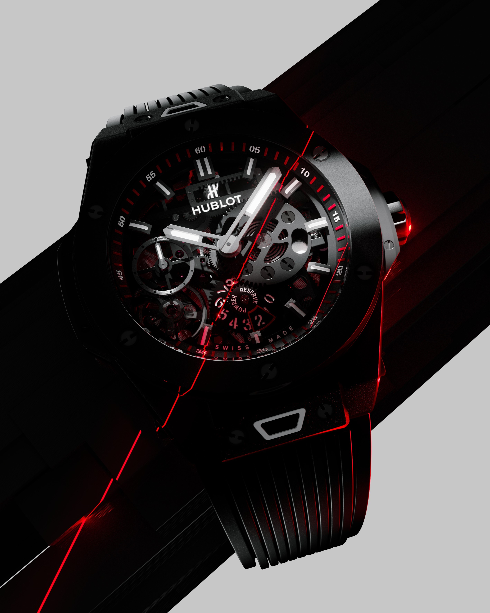
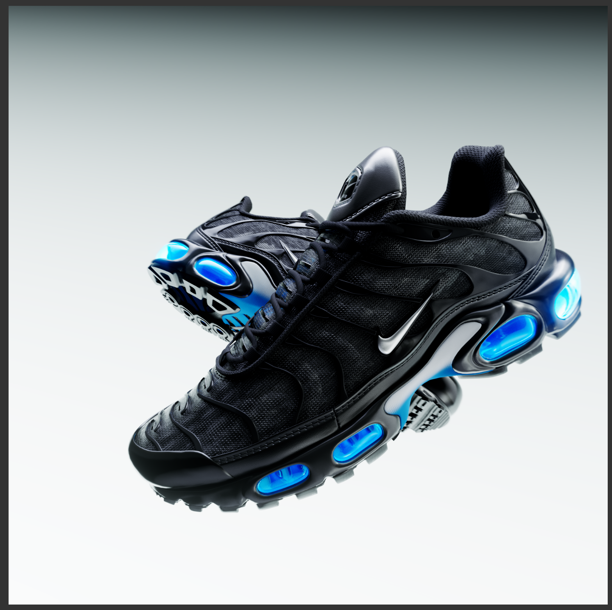
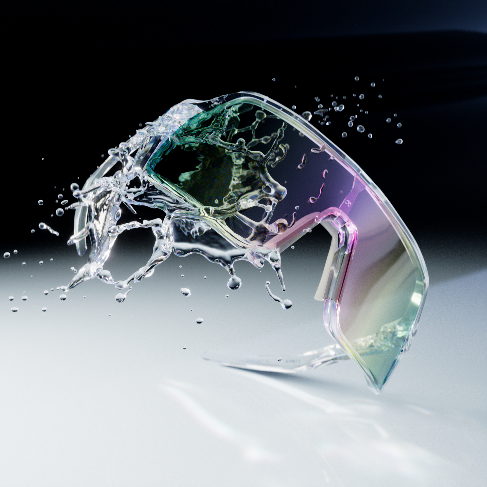

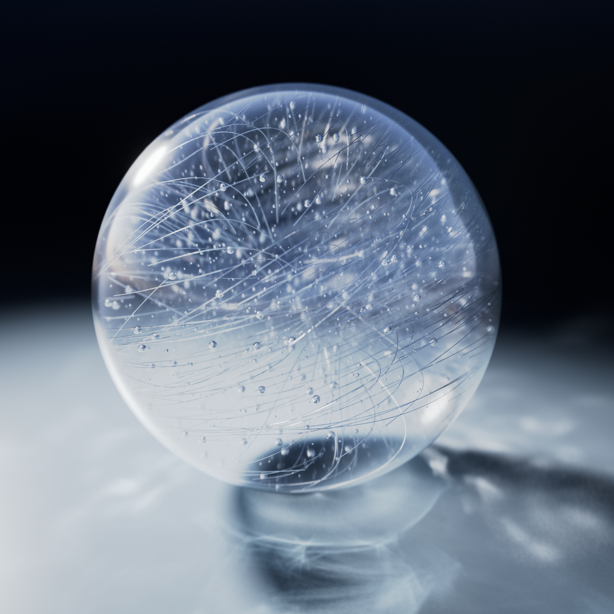
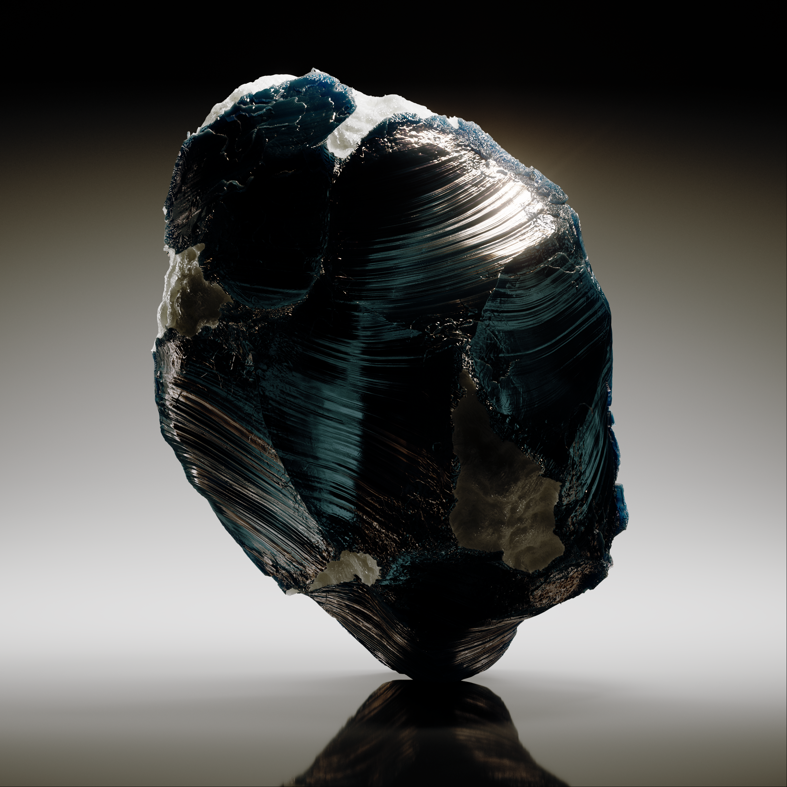

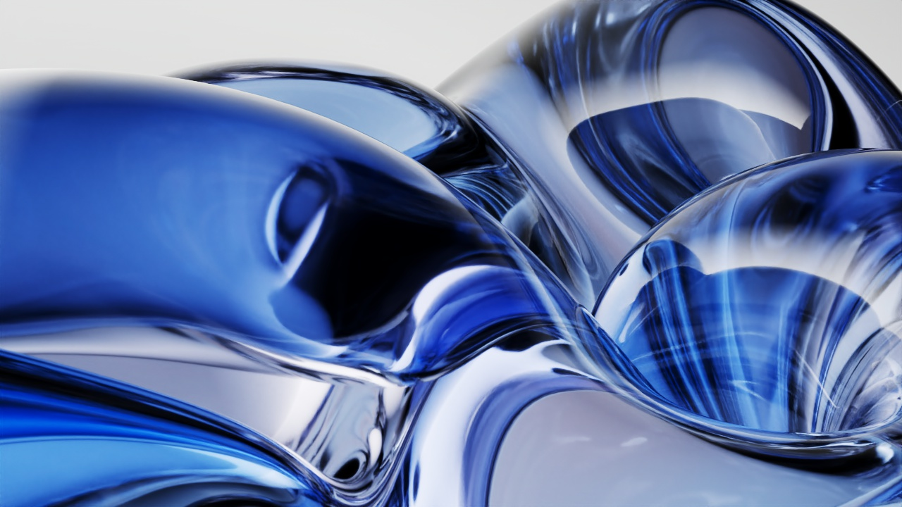
Personal work with no brief and no client — materials pushed past the point of realism, forms with no commercial purpose, renders made to sharpen the eye.
Get in touch
Let's makesomething real.